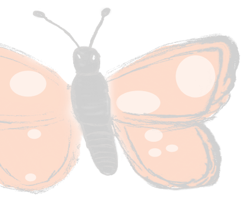

Twitter
Reddit

Github

Telegram

TECHNICAL EXAMPLE
The size of an object is not just 10 pixels at time 0 and 100 pixels at time 100. Instead the size is a function! size = 10 x (time). So that as time goes on - forever - the tree constantly grows (possibly off the screen). The artist must think about this new dimension as well.
Luckily there are some obvious and common situations - here MIMICRY’s GUI is already fully capable. Through the toolbar interface users can easily apply and adjust common function to objects.
Using the tree example, MIMICRY has already built in an infinite growth function where the bounds can be set. The artist can easily setup where a tree should ALWAYS be growing but it should never be small that the lower limit at the start and never bigger than the upper limit even at infinite time.
The size of an object is not just 10 pixels at time 0 and 100 pixels at time 100. Instead the size is a function! size = 10 x (time). So that as time goes on - forever - the tree constantly grows (possibly off the screen). The artist must think about this new dimension as well.
Luckily there are some obvious and common situations - here MIMICRY’s GUI is already fully capable. Through the toolbar interface users can easily apply and adjust common function to objects.
Using the tree example, MIMICRY has already built in an infinite growth function where the bounds can be set. The artist can easily setup where a tree should ALWAYS be growing but it should never be small that the lower limit at the start and never bigger than the upper limit even at infinite time.
The most obvious feature of Infinite Animation Artwork (IA) is that it is Perpetual. This means that each
individual piece uses a collection of AI techniques and then is rendered realtime for the viewer so that the
depicted scene forever updates. This crucial feature distinguishes perpetual art from all other previous art
forms.
1. The artwork is alive
Its constantly changing nature is always producing something new for the viewer. That update has never been seen before as it is generated according to the artist determined algorithms. This is the main allure of IA - each time you go to view a piece, it is brand new information for the viewer - significantly increasing the amount of time spent viewing a single piece and additionally increasing the future likelihood of return viewers to the same piece. This perpetual nature makes persistent art closer to performance art or a live stream. Despite similarities in their content streamers draw large audiences due to the uniqueness of every stream. Furthermore, there is an element of not wanting to miss a stream for fear of missing some interesting update. Persistent art has these elements as well - viewers are drawn back in if they want to know the full story.
2. The updates can include new information or data not yet known to the artist
The artist - through code - can pull updated information at each frame incorporating that new information into the visual aspects of the art. With any piece that is rendered prior to viewing, the piece must pick a static set of historical data and the art can at best show that old information. As persistent art is constantly updating it can incorporate this data into the visual elements realtime. Completely changing how a viewer interacts with a piece of artwork and the way in which new information can be conveyed to a viewer.
This can be used in various ways: to tell a story, to showcase a game, to express the complexities of a given scene. The platform allows for all types of art - deceptively simple or exceedingly complex. Regardless, the switch from artist generating a static image to artist generating a static algorithm [that utilizes possibly changing data] which produces an ever changing image provides a limitless platform.
Artist have to think differently about art:
When making a static piece of artwork, the artist must conceive of the immediate visual elements of each depicted object. What color is the best, how large should the head be relative to the body, is the lighting correct? When making an animation, the artist must ask themselves and have vision about the limited future of each object. How will this object change over time? WIll the color be static or determined based on some outside data? Does this object grow over time? Is this object always visible to the viewer or is it off screen at some points?
Infinite animation takes this one step further. By requiring the artist to ensure that the future of objects is infinite. How should an obj change when it’s lifetime is infinite.
Carving out a future for Artists
Faced with the emergence of DALLE-2 and similar art generating AI, we must ask ourselves what will art look like in the future. What place do humans have when AI encrouches on the realm of artist and can produce quality art in a fraction of the time?
Infinite Animation Artwork is the answer. Flexible machine learning required to write arbitrary code is a decade off - if it’s even possible. Therefore, while DALLE-2 can recreate masterpiece paintings today, Infinite Animation Artwork will always require a human. Specifically IA requires a human in order to write unique code for each an every element in the piece. IA is future proof because it works on the idea of: the artist codes the parts of the artwork that a machine can’t do and leaves the rest of the computation to the machine learning algorthims. Therefore AI can never replace human artists by design.
Importance for NFTs
The perpetual aspect of IA is one key piece to the puzzle for creating varifiably valuable NFTs. Creating soft assets is not an easy task and to guarentee they have value, some pretty extreme conditions must be met. Being perpetual is necessary but not sufficient on it’s own. In the rest of this blog series, we talk about the other conditions that make IA NFT’s so unique and valuable
1. The artwork is alive
Its constantly changing nature is always producing something new for the viewer. That update has never been seen before as it is generated according to the artist determined algorithms. This is the main allure of IA - each time you go to view a piece, it is brand new information for the viewer - significantly increasing the amount of time spent viewing a single piece and additionally increasing the future likelihood of return viewers to the same piece. This perpetual nature makes persistent art closer to performance art or a live stream. Despite similarities in their content streamers draw large audiences due to the uniqueness of every stream. Furthermore, there is an element of not wanting to miss a stream for fear of missing some interesting update. Persistent art has these elements as well - viewers are drawn back in if they want to know the full story.
2. The updates can include new information or data not yet known to the artist
The artist - through code - can pull updated information at each frame incorporating that new information into the visual aspects of the art. With any piece that is rendered prior to viewing, the piece must pick a static set of historical data and the art can at best show that old information. As persistent art is constantly updating it can incorporate this data into the visual elements realtime. Completely changing how a viewer interacts with a piece of artwork and the way in which new information can be conveyed to a viewer.
This can be used in various ways: to tell a story, to showcase a game, to express the complexities of a given scene. The platform allows for all types of art - deceptively simple or exceedingly complex. Regardless, the switch from artist generating a static image to artist generating a static algorithm [that utilizes possibly changing data] which produces an ever changing image provides a limitless platform.
Artist have to think differently about art:
When making a static piece of artwork, the artist must conceive of the immediate visual elements of each depicted object. What color is the best, how large should the head be relative to the body, is the lighting correct? When making an animation, the artist must ask themselves and have vision about the limited future of each object. How will this object change over time? WIll the color be static or determined based on some outside data? Does this object grow over time? Is this object always visible to the viewer or is it off screen at some points?
Infinite animation takes this one step further. By requiring the artist to ensure that the future of objects is infinite. How should an obj change when it’s lifetime is infinite.
Carving out a future for Artists
Faced with the emergence of DALLE-2 and similar art generating AI, we must ask ourselves what will art look like in the future. What place do humans have when AI encrouches on the realm of artist and can produce quality art in a fraction of the time?
Infinite Animation Artwork is the answer. Flexible machine learning required to write arbitrary code is a decade off - if it’s even possible. Therefore, while DALLE-2 can recreate masterpiece paintings today, Infinite Animation Artwork will always require a human. Specifically IA requires a human in order to write unique code for each an every element in the piece. IA is future proof because it works on the idea of: the artist codes the parts of the artwork that a machine can’t do and leaves the rest of the computation to the machine learning algorthims. Therefore AI can never replace human artists by design.
Importance for NFTs
The perpetual aspect of IA is one key piece to the puzzle for creating varifiably valuable NFTs. Creating soft assets is not an easy task and to guarentee they have value, some pretty extreme conditions must be met. Being perpetual is necessary but not sufficient on it’s own. In the rest of this blog series, we talk about the other conditions that make IA NFT’s so unique and valuable
BLOG PHOTO
Steven Parad
2022.07.06
2022.07.06
Understanding Infinite Animation: Perpetual
